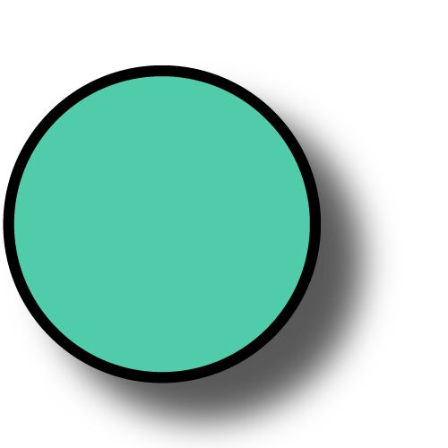

L'application OpenAirMap est un projet open source porté par AirCarto et AtmoSud pour afficher en temps réel les mesures de qualité de l'air effectué par
les stations de mesures et les micro-capteurs. Les informations affichées sur la carte sont récupérées via différentes plateforme de mise à disposition de données de mesure (API).
A noter que cette application est en constante évolution et amélioration. Pour toutes questions et suggestions n'hésitez pas à déposer un message sur le GitHub du projet.
| Type de mesure | Icône | Pas de temps | Description | Lien vers API | |
|---|---|---|---|---|---|
| Capteurs NebuleAir | micro-capteur |  |
Micro-capteurs open source co-développés par AirCarto et AtmoSud | AirCarto | |
| Capteurs Sensor.Community | micro-capteur |  | Micro-capteurs open source fabriqués par des citoyens bénévoles | Sensor.Community | |
| Capteurs PurpleAir | micro-capteur |  |
Micro-capteurs commercialisés par l'entreprise américaine PurpleAir Inc. | PurpleAir | |
| Micro-stations AtmoSud | micro-capteur |  |
Micro-capteurs déployés par AtmoSud | AtmoSud | |
| Stations de référence AtmoSud | station |  |
Stations de référence installées dans le cadre de la mission de surveillance de la qualité de l'air d'AtmoSud | ||
| Modélisation Horaire PM AtmoSud | modélisation | Modélisation des particules fines à l'échelle horaire sur toute la région PACA | |||
| Modélisation Horaire ICAIRH AtmoSud | modélisation | Modélisation de l'indice cumulé de la qualité de l'air (NO2, O3, PM2.5 et PM10) à l'échelle horaire sur toute la région PACA. |